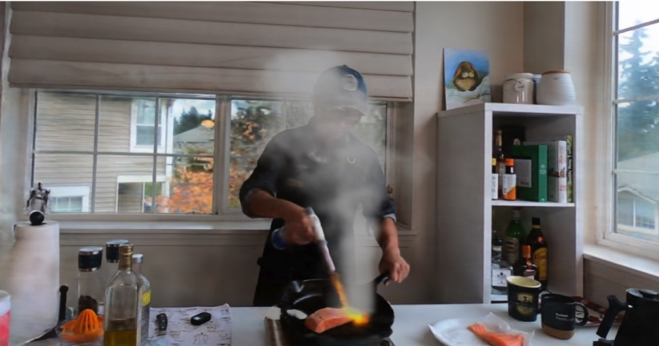
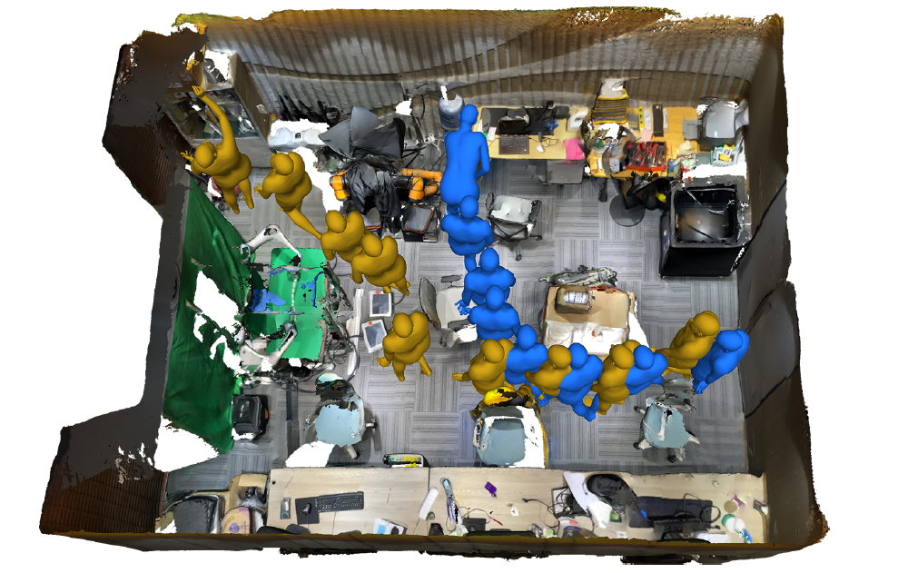
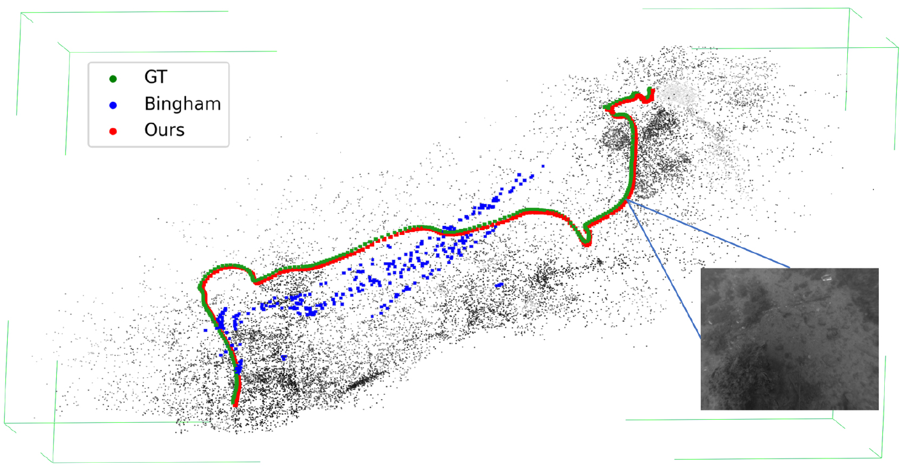
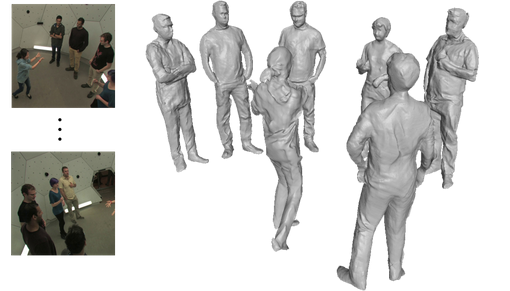

Publications and Manuscripts

Inferring Hybrid Neural Fluid Fields from Videos
Hong-Xing Yu*, Yang Zheng*, Yuan Gao, Yitong Deng, Bo Zhu, Jiajun Wu
NeurIPS 2023
Paper |
Project |
Code

PointOdyssey: A Large-Scale Synthetic Dataset for Long-Term Point Tracking
Yang Zheng, Adam W. Harley, Bokui Shen, Gordon Wetzstein, Leonidas J. Guibas
ICCV 2023, Oral
Paper |
Project |
Code

GIMO: Gaze-Informed Human Motion Prediction in Context
Yang Zheng, Yanchao Yang, Kaichun Mo, Jiaman Li, Tao Yu, Yebin Liu, Karen Liu, Leonidas J. Guibas
ECCV 2022
Paper |
Project |
Code

6D Camera Relocalization in Visually Ambiguous Extreme Environments
Yang Zheng, Fei Xia, Tolga Birdal, Yanchao Yang, Yueqi Duan, Leonidas J. Guibas
Arxiv

DeepMultiCap: Performance Capture of Multiple Characters Using Sparse Multiview Cameras
Yang Zheng*, Ruizhi Shao*, Yuxiang Zhang, Tao Yu, Zerong Zheng, Qionghai Dai, Yebin Liu (* equal contribution)
ICCV 2021
Paper |
Project |
Code |
Dataset